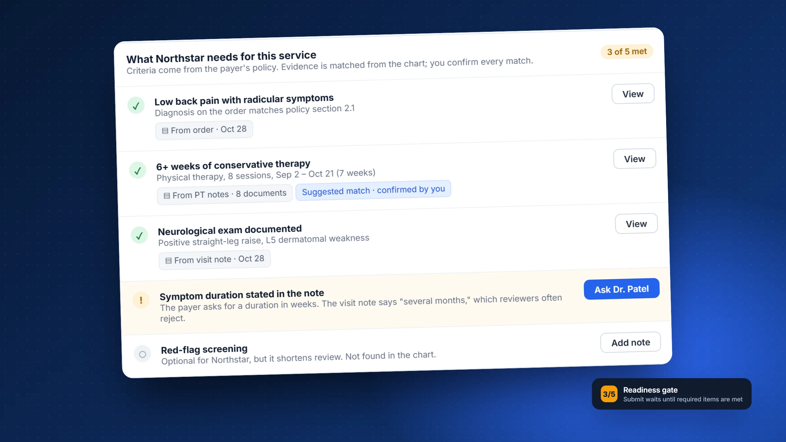
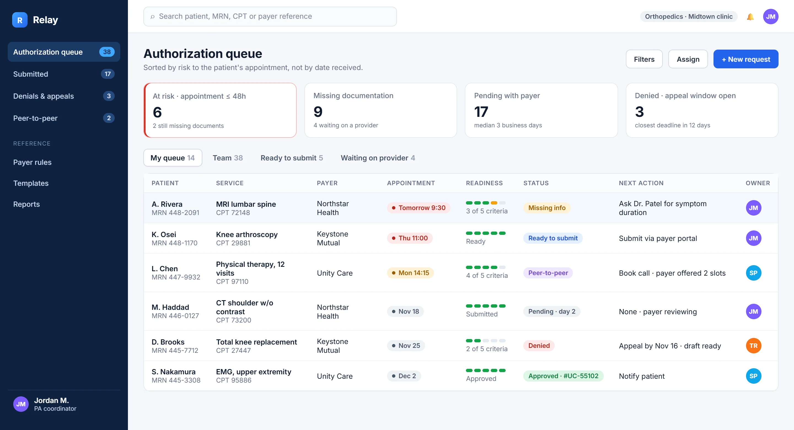
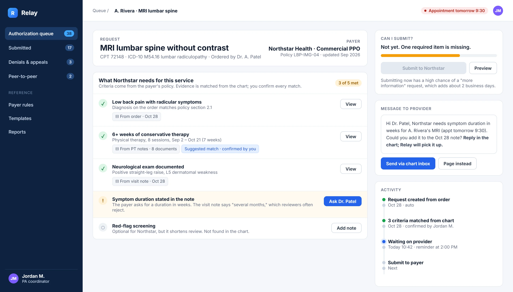
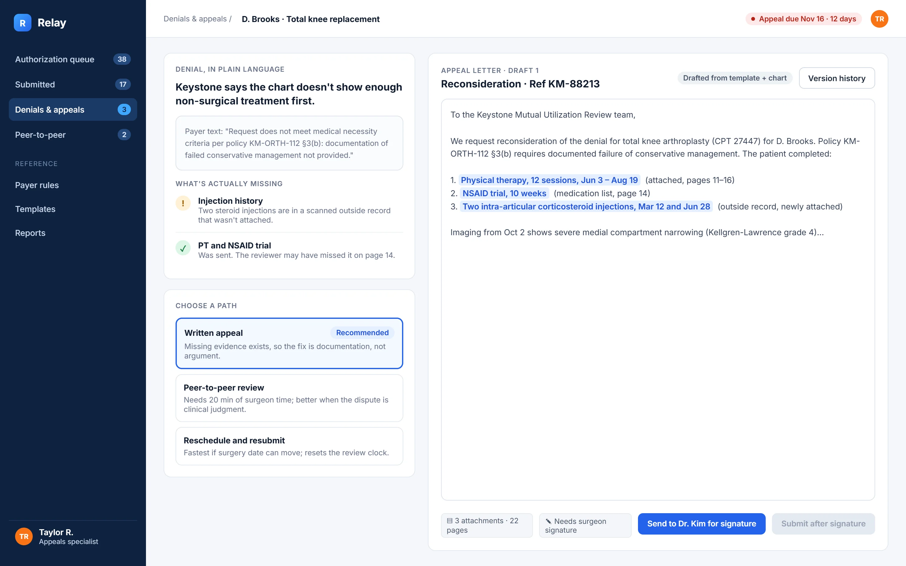

A prior authorization workspace that tells clinic staff what the payer will ask for, before the payer asks.
Type
Self-initiated concept
My role
Solo: research synthesis, service design, UX and UI
Platform
Desktop web app for clinic staff
Methods
Secondary research, service blueprint, assumption mapping, decision log
Concept projectI didn't run primary research for this project. The problem is framed with published data (sources at the end), the workflow is modeled from public material, and the validation plan shows how I'd test it with real coordinators. Patients, payers, clinics and policies in the screens are fictional.
Overview
Long story short
Context
Before many tests, procedures and drugs, a clinic has to get the patient's insurer to approve them. This is called prior authorization. Staff collect evidence from the chart, fill in payer forms or portals, and chase decisions by phone and fax.
Problem
Physicians report around 39 prior authorizations a week, taking about 13 hours of physician and staff time1. Many requests come back asking for more information that was already in the chart, and the delay lands on the patient.
My role
Framed the problem from published research and modeled the end-to-end workflow as a service blueprint.
Mapped the riskiest assumptions, wrote a decision log for the three biggest design choices, and designed the core screens.
Wrote a validation plan and success metrics so the concept can be tested, not just admired.
Solution
A workspace that turns each payer's policy into a readiness checklist, matches evidence from the chart with its source visible, ranks the queue by risk to the patient's appointment, and turns a denial into a plain-language appeal path.
Deliverables
Service blueprint, assumption map, decision log, 3 high-fidelity screens, edge-case behavior, a validation plan and a metric framework.
The problem
Paperwork that sits between a patient and their care
The American Medical Association surveys physicians about prior authorization every year. The 2024 survey of 1,000 physicians gives a sense of the scale1:
39prior authorizations per physician, per weekAMA 2024 survey [1]
13 hof physician and staff time each weekAMA 2024 survey [1]
40%of physicians employ staff who work only on prior authAMA 2024 survey [1]
29%report it led to a serious adverse event for a patientAMA 2024 survey [1]
The rules are also changing. A 2024 federal rule requires certain payers (Medicare Advantage, Medicaid, CHIP and some marketplace plans) to give a specific reason for every denial and to decide within 72 hours for urgent and 7 calendar days for standard requests, mostly from 20262. More structured payer responses make it realistic to design tools around them.
Where I chose to focus: the people who do this work every day are prior authorization coordinators, not physicians. Their tools today are the EHR, a different portal for each payer, fax, phone and spreadsheets. Nothing tells them, before they submit, whether a request is complete.
How might we
How might we help coordinators submit complete requests the first time, and always work first on the ones that put a patient's appointment at risk?
People
Four roles, one request
These are assumption-based proto-personas, built from the workflow rather than from interviews. Step one of the validation plan is to replace them with real ones.
01PA coordinator · primary user
Owns the queue. Needs to know what's missing, whose move it is, and which case can't wait. Measured on approvals and on appointments that go ahead.
02Ordering provider
Holds the clinical facts but is interrupted constantly. Needs specific, rare and answerable asks, not "please review chart."
03Appeals specialist
Works the denials. Needs the real reason behind the payer's language, the deadline, and the evidence to cite.
04Patient · affected, not a user
Experiences the delay as a cancelled scan or surgery. Needs timely, honest updates from the clinic.
Service blueprint
Where a request actually breaks
I modeled one request from order to decision across everyone involved. The dashed line is the line of visibility: everything below it happens out of the coordinator's sight. That is where most of the waiting is.
Before designing screens, I listed what the concept depends on and sorted it by how damaging it would be if wrong, and by how much evidence I have. The highlighted quadrant, high risk with little evidence, is where research should start.
← Lower risk · Higher risk if wrong →
High risk · little evidence · test first
Payer criteria can be turned into a structured checklist per service and kept current.
Coordinators will trust evidence matched from the chart if they can see where it came from.
"Readiness" predicts which requests get "more info" replies.
High risk · good evidence
Time spent and denials are a real, recurring burden for clinics.1
Payers are moving toward specific denial reasons and fixed timeframes.2
Lower risk · little evidence
Coordinators prefer a ranked queue over sorting it themselves.
Providers answer specific asks faster than general ones.
Lower risk · good evidence
Clinic staff work in the EHR all day, so Relay must link to it, not replace it.
Little evidenceGood evidence
Decision log
Three choices that shaped the product
For each choice I compared three directions and wrote down what I picked, why, and the trade-off I accepted. Trade-offs are what a team actually needs to debate.
Decision 01
What order should the queue be in?
Date receivedFirst in, first out. Fair and simple, but a request for a surgery tomorrow can sit behind one for next month.
By payerBatching portal work saves logins, but optimizes for the coordinator's convenience, not the patient.
Risk to the appointmentDays until the appointment, combined with what's missing and whose move it is.
WhyThe outcome that matters most is a patient's appointment going ahead. Ranking by it puts the cases that can't wait at the top.
Trade-off acceptedA ranked list can feel like a black box. So every row says why it's there (for example "Tomorrow 9:30 · missing info"), and the team view keeps date order available.
Decision 02
How much should the system fill in on its own?
Auto-fill and auto-submitFastest on paper. But a wrong match sent to a payer is a denial with the clinic's name on it.
Suggest, show the source, human confirmsMatches come with a link to the exact note; the coordinator confirms each one.
Search onlySafe, but leaves the hardest part, finding the evidence, as manual as today.
WhyCoordinators are accountable for what gets submitted. Showing the source lets them check a match in seconds instead of re-reading the chart.
Trade-off acceptedSlower than full automation. If testing shows match accuracy is very high for some criteria, those could be pre-confirmed later.
Decision 03
What happens when a required item is missing?
Warn and let them submitRespects experience, but warnings get clicked past under pressure.
Hold the submit, explain the cost, offer the fix"Not yet. One required item is missing." The fix, asking the provider, is one click.
Message the provider automaticallyRemoves a step, but creates the noise providers already ignore.
WhyA "more information" reply typically costs more days than getting the missing item now. The screen says this in plain words so the hold feels like help, not a block.
Trade-off acceptedExperienced coordinators sometimes know a payer won't need an item. Leads can override with a reason, and those overrides feed back into the checklist.

Spotlight · The readiness gateThe checklist mirrors the payer's own policy, so coordinators see the reviewer's view before they submit.
Design
Three screens, three moments in the workflow
Moment 1 · Start of the day
A queue that tells you what to do first

A
Risk firstThe red card counts appointments within 48 hours that aren't approved yet. It's the only card styled as urgent.
B
Readiness at a glanceA five-step meter shows how many payer criteria are met, without opening the case.
C
A next action on every row"Ask Dr. Patel for symptom duration" instead of a generic status.
D
Views by whose move it is"Waiting on provider" separates work you can do from work you're blocked on.
Moment 2 · Building a request
The payer's policy, turned into a checklist

A
Criteria, not form fieldsThe list is what the reviewer will check, in the payer's order, with the policy version shown.
B
Every match shows its source"From PT notes · 8 documents", and a label when a suggestion has been confirmed by a person.
C
Why it's flagged"Several months" isn't a duration in weeks, so reviewers reject it. The reason is right on the row.
D
An ask a provider can answerThe message is pre-written, specific, and says the appointment time.
Moment 3 · After a denial
From payer language to a plan

A
Plain language on topThe payer's exact text is kept underneath, because appeals have to answer it word for word.
B
What's actually missingHere the injections were in an outside record that was never attached. That changes the strategy.
C
Paths with their costWritten appeal, peer-to-peer or reschedule, each with when it's the right call.
D
A draft that cites evidenceHighlighted claims link to page numbers. Submission waits for the surgeon's signature.
Visual language
A look that does a job
Clinic software is used for eight hours a day, so the interface stays quiet: navy chrome, white work surfaces, and color reserved for meaning. Red appears only when a patient's appointment is at risk.
Night#0d2240Navigation, focus
Relay blue#2563ebPrimary actions
Surface#f5f7faWork areas
Risk#d92d20Appointment at risk
Attention#f59e0bMissing information
Met#16a34aCriteria met, approved
Typeface
Aa
Inter
Title 30Heading 17Body 14 · the default reading sizeCaption 12 · sources and timestamps
Tabular figures for codes, dates and counts; 13px base for dense tables, 22px page titles.
Components
Missing infoReady to submitPeer-to-peerDeniedApproved
Readiness meter · 3 of 5 criteria
▤ From PT notes · 8 documentsSuggested match · confirmed by you
Ask Dr. PatelSubmit to NorthstarHeld state explains itself
Edge cases
Designing for the bad days
Workflow tools fail at the edges. These are the cases I designed behavior for before polishing the happy path.
The payer's policy changes mid-request
Risk: a request built against old criteria gets denied.
Behavior: open requests show "Policy updated Sep 2026" and re-check the list, highlighting new items.
The provider doesn't reply before the appointment
Risk: the appointment is lost silently.
Behavior: escalation at set times (reminder, then page), and a prompt to warn the patient early.
The evidence is a blurry scanned fax
Risk: text recognition reads it wrong.
Behavior: low-confidence matches are never marked as met; they show as "Check this document".
An urgent case
Risk: standard flow is too slow.
Behavior: marking it urgent pins it to the top and shows the payer's urgent timeframe.
Two coordinators open the same case
Risk: duplicate submissions.
Behavior: a live "Jordan is editing" banner, and submission is locked to one owner.
Validation plan
How I would find out if I'm wrong
The plan tests the riskiest assumptions first and is cheap enough to run in a few weeks. Success criteria are set in advance, so results can't be read generously afterward.
Question
Method
Participants
We'd keep going if…
How do coordinators judge a request "complete" today?
Contextual inquiry: observe a half-day of real work, then interview
6–8 coordinators across 3 specialties
Their mental checklist maps to payer criteria, not just to habit
Can a checklist match an expert's judgment?
Review 20 past de-identified requests against Relay's checklist
2 senior coordinators
They agree with at least 80% of the checklist verdicts
Do people catch a wrong suggested match?
Task-based usability test with two deliberately wrong matches
8 coordinators
At least 7 of 8 catch both before submitting
Does risk ranking change what gets worked first?
Prioritization exercise: the same 15 cases, sorted by date vs. by Relay
8 coordinators + 1 clinical lead
Top 5 choices match the clinical lead more often with Relay's order
Does it reduce "more information" replies?
8-week pilot in one clinic against its previous 8 weeks
One clinic team
A clear drop, with no rise in denials
Success metrics
What I'd measure after launch
North star
Share of requests approved on the first submission
It captures both completeness and speed, and it's what coordinators already care about.
Leading signals
Time from order to submission
At-risk appointments resolved at least 24 hours before
Provider asks answered the same day
Guardrails
Wrong matches caught before submission
Provider messages per request (shouldn't rise)
How often leads override the readiness hold
Reflection
What this project taught me
The hard part isn't the screen
The concept depends on payer rules becoming structured data. A real team would test that assumption before investing in UI, and the plan puts it first.
Automation needs an owner
In regulated work, "the system did it" isn't an answer. Designing for confirmation made the tool more trustworthy without making it slower where it counts.
Next I'd talk to coordinators
Every proto-persona and blueprint row here is a hypothesis. Half a day watching real work would likely change the queue design most.